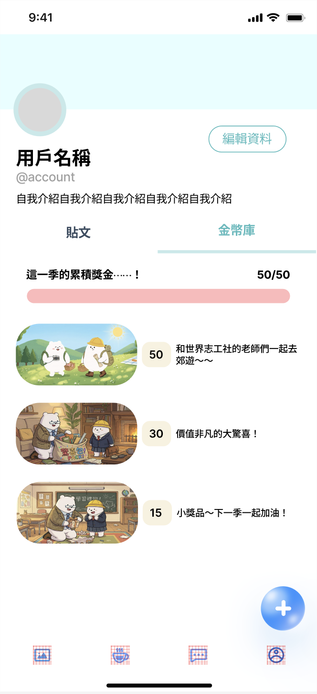

「橋接遠端與現場：以『關係』驅動的偏鄉教育支持系統」
我們認為偏鄉教育的關鍵不在於「平台的功能」，而在於「關係的延續」。本計畫透過 Hybrid（線上+線下） 模式，將線下志工的真實接觸作為情感基礎，並以線上平台作為日常陪伴的延伸。透過「學習日記」與「點數激勵機制」，將長期的學習動機轉化為可見的進度；最後以「跨縣市探索教育」作為終極獎勵，打破地理屏障，補足偏鄉孩子在生活經驗上的斷層。

Fig 1. Gamified Reward Interface
Fig 2. Learning Diary Dashboard
互動式學習日記： 平台設計類似「社群媒體回饋」模式。志工的檢核不只是「批改」，而是具備情感溫度的「留言與肯定」，建立非同步的陪伴感。
微獎勵 (Micro-incentives)： 每日日記可獲得虛擬點數，用於解鎖個人化勳章或虛擬寵物。
終極獎勵 (The Grand Goal)： 累積點數兌換由志工帶領的「跨縣市探索之旅」，將旅遊轉化為移動教室。
場景化探索： 將遊玩設計成「實踐素養題」，如練習規劃車票、閱讀城市地圖，消除因資訊不對稱帶來的學習挫折感。
動機偵測： 追蹤孩子上傳頻率。若頻率下降，系統主動提醒志工進行「線上關懷」，在孩子放棄前介入。
| 範疇 (Category) | Challenge (挑戰) | Solution (對策) |
|---|---|---|
| 動機 Motivation | 缺乏長期堅持誘因，學習與生活脫節。 | 學習點數制將進度量化，以跨縣市探索為終極目標。 |
| 關係 Connection | 線下活動結束後，志工與孩子連結中斷。 | 線上日記平台作為情感橋樑，維持跨時空陪伴。 |
| 素養 Literacy | 缺乏城市經驗，難以理解抽象素養題。 | 志工帶隊出遊延伸學習場域，補足生活經驗缺失。 |
| 執行 Execution | 志工檢核負擔大，孩子容易感到枯燥。 | 遊戲化介面與情感回饋，將檢核轉化為互動交流。 |